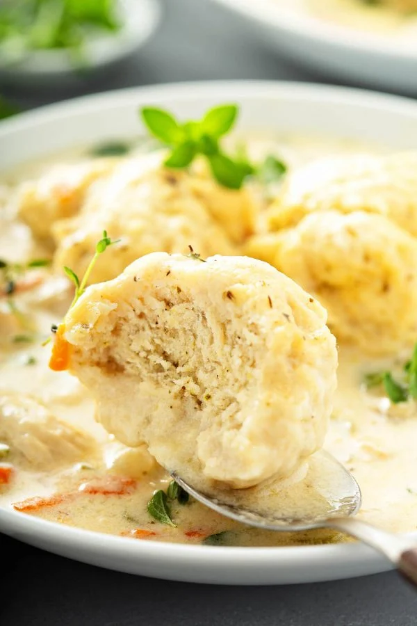

Chicken and Dumplings

I've never tried this recipe personally but my girlfriend swears by it, lets see if it's any good!
You'll need the following
- 3 Chicken Breasts
- Can of Biscuts
- One Box of Chicken Broth
- One Can Cream of Chicken
- Optional Vegetables of your choosing
LETS GET STARTED
- Boil 3 chicken breast in a pot with your box of chicken broth and 1 cup of water
- Once chicken is boiled and cooked, set aside
- Add the can of cream of chicken to the broth
- Lower temp to Medium
- Get your can of biscuits and cut them to desired dumpling size
- Set your heat to medium-high and slowly add your bicuit pieces
- Leave your biscuits to boil for 10 minutes and shred or cut up your chicken while you wait
- Add your chicken (and veggies if using) to the the pot
- Heat on medium-low temperature for 5 minutes
- Enjoy!